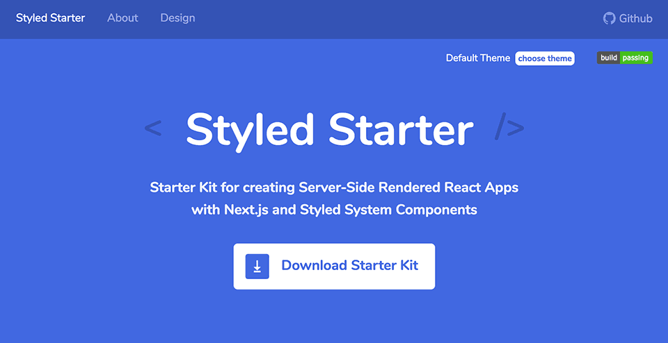
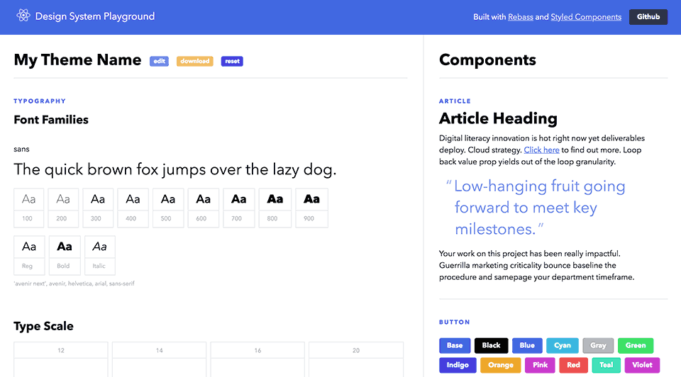
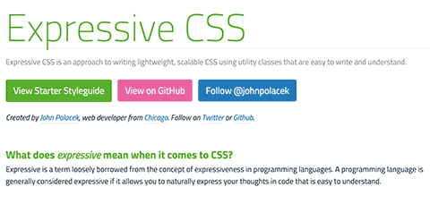
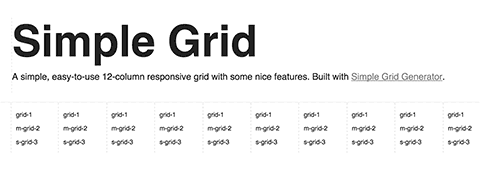
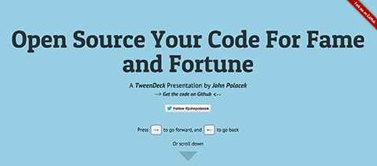

John Polacek
Lead Web Developer at GiveSmart,
mobile fundraising platform for charity events.
Read my blog:
Chicago Web Developer John Polacek
Follow @johnpolacek
HTML + CSS + JS
Styled Starter
Starter Kit for creating Server-Side Rendered React Apps with Next.js and Styled System Components.
johnpolacek.github.io/styled-starterDesign System Playground
Experiment with design systems by updating stateful theme data which controls typography and colors.
johnpolacek.github.io/design-system-playgroundExpressive CSS
See and share how web pages look at different screen sizes
johnpolacek.github.io/expressive-cssSimple Grid and Simple Grid Generator
A simple, easy-to-use 12-column responsive grid with some nice features.
johnpolacek.github.io/simple-grid
A SASS grid generator for creating responsive grids with some nice features.
Responsivator!

See and share how web pages look at different screen sizes
johnpolacek.github.io/Responsivator

SuperScrollorama

The jQuery plugin for doing cool scrolly stuff.
johnpolacek.github.io/superscrolloramastacktable.js

jQuery plugin for stacking tables on small screens.
johnpolacek.github.io/stacktable.jsExtra Strength Responsive Grids

A Fluid CSS Grid System for Responsive Web Design
dfcb.github.com/extra-strength-responsive-gridsOpen Source For Fame and Fortune
Animated Slide Deck from my talk at Techweek Chicago
github.com/johnpolacek/open-source-for-fame-and-fortuneChannel of Awesome

Web playlists of YouTube and Vimeo videos that play fullscreen in a loop
dfcb.github.com/channel-of-awesomeWhat The Heck Is Responsive Web Design?

Introductory presentation to Responsive Web Design
(uses my Scrolldeck plugin)
Apps
Match The Letter

A picture game that helps kids learn the alphabet.
github.com/johnpolacek/Match-The-Letter-GameVideo Gallery

Simple app built for quickly creating custom video galleries using the Corona SDK.
github.com/johnpolacek/Video-GalleryMy Github All The Things
github.com/johnpolacek/